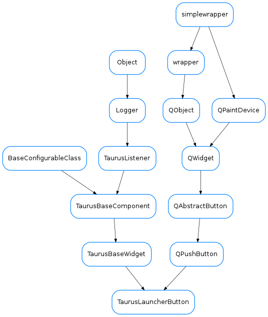

TaurusLauncherButton¶

Bases:
PyQt4.QtGui.QPushButton,taurus.qt.qtgui.base.taurusbase.TaurusBaseWidgetThis class provides a button that launches a modeless dialog containing a specified Taurus widget which gets the same model as the button. The button does not use the model directly. Instead it passes it to the associated widget.
Code examples:
# a button that launches a TaurusAttrForm when clicked button = TaurusLauncherButton(widget = TaurusAttrForm()) button.setModel('a/b/c') #a device name, which will be set at the TaurusAttrForm when clicking # a button that launches a taurusLabel (whose model is an attribute: 'a/b/c/attrname') button = TaurusLauncherButton(widget = TaurusLabel()) button.setModel('a/b/c/attrname') # attr name, which will be set at the TaurusLabel when clicking #same as the previous one, but using the parent model and putting a custom text and icon: button = TaurusLauncherButton(widget = TaurusLabel(), text='click me', icon='logos:taurus.png') button.setUseParentModel(True) #let's assume that the button's parent has a model of type "/a/b/c" button.setModel('/attrname')
Returns the model name for this component.
Return type: strReturns: the model name.
Returns whether this component is using the parent model
Return type: boolReturns: True if using parent model or False otherwise
see
TaurusBaseComponent.displayValue()
see
TaurusBaseComponent.getDisplayValue()
see
TaurusBaseComponent.getModelClass(). Note that in the case ofTaurusLauncherButton, the class is completely dependent on the widget’s class
Slot called when the button is clicked. Note that the dialog will only be created once. Subsequent clicks on the button will only raise the existing dialog
Sets the text of the button. see
Qt.QPushButton.setText()
sets the widget that will be shown when clicking the button
Parameters: widget ( QWidget) –